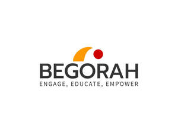
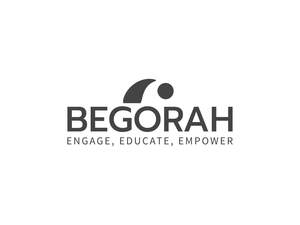
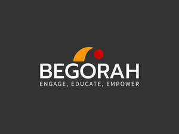

Trade Mark Journal No.2026/009 27 February 2026
UK00004337010 6 February 2026 (41,42)
Mark 1

Mark 2

Mark 3

- Class 41
- Education; Vocational education; Health education; Pre-school education; Education and training; Academies [education]; Education and instruction; Services of schools [education]; Education services; University education services; Education, teaching and training; Academy services (Education -); Education academy services; Academy education services; Vocational education and training services; Religious education; Education (Religious -); Music education; Training and education services; Education and training services; Education examination; Education and instruction services; Kindergarten services [education or entertainment]; Provision of education courses; Educational services for providing courses of education; Career counseling [education]; Teaching of diet education; Higher education services; Provision of education and training; Provision of training and education; Providing of education; Physical education; Education academy services for teaching languages; Entertainment, education and instruction services; Education academy services for teaching art history; Medical education services; Education information; Computer education training; Education services relating to vocational training; Information (Education -); Primary education services; Adult education services; Residential education courses; Computer education training services; Linguistic education and training services; Boarding school education; Education and training consultancy; Primary education services relating to literacy; Physical education instruction; Further education; Vocational education relating to home safety; Musical education services; Sports education services; Physical education services; Vocational education relating to self-defence; Education academy services for teaching acting; Physical health education; Legal education services; Technological education services; Providing continuing medical education courses; Online education services; Lingual education; Provision of physical education; Management education services; Management of education services; Education services related to the arts; Education services relating to health; Singing education; Education services relating to nutrition; Education academy services for teaching construction drafting; Dietary education services; Providing continuing dental education courses; Career counselling relating to education and training; Education services relating to religion; Education courses relating to automation; Vocational education in the field of mechanics; Educational services provided by institutes of higher education; Club education services; Education and training in the field of music and entertainment; Vocational education relating to personal safety; Education and training services in the field of occupational health and safety; Adult education services relating to medicine; Research in the field of education; Providing continuing nursing education courses; Adult education services relating to finance; Education and training in the field of occupational health and safety; Education information services; Education services for imparting language teaching methods; Guidance (Vocational -) [education or training advice]; Vocational guidance [education or training advice]; Secondary school educational services; Sporting education services; Education services relating to medicine; Education services relating to business training; Education, entertainment and sport services; Educational and teaching services; Education courses relating to the travel industry; Training or education services in the field of life coaching; Providing continuing legal education courses; Education services relating to the veterinary profession; Career counselling [training and education advice]; Adult education services relating to law; Vocational education relating to first aid; Education in the field of computing; Blindness prevention education services; Vocational education for young people; Education services relating to yoga; Education, entertainment and sports; Provision of education courses relating to electronics; Education services relating to conservation; Adult education services relating to commerce; Education in the field of occupational health and safety; Education services in the nature of courses at the university level; Education services relating to music; Career advisory services (education or training advice); Provision of education courses relating to telecommunications; Education services relating to commerce; Adult education services relating to banking; Education in the field of computing science; English language education services; Education services relating to industry; Adult education services relating to pharmacy; Provision of facilities for education; Education services relating to hygiene; Residential education courses relating to archery; Educational services provided by institutes of further education; Provision of education courses relating to computers; Organization of education competitions; Education in movement awareness; Education services relating to the cinema; Adult education services relating to management; Education services relating to fashion; Organization of competitions [education or entertainment]; Education services relating to sports; Education services relating to photography; Competitions (Organization of -) [education or entertainment]; Organization of competitions for education or entertainment; Education services relating to banking; Education services relating to pharmacy; Adult education services relating to auditing; Education and training in the field of business management; Education services relating to food technology; Educational and training services relating to healthcare; Education services relating to conservation of the environment; Providing education courses relating to the travel industry; Education and training in the field of automotive engineering; Foreign language education services.
- Class 42
- Science and technology services; Computer technology consultancy; Rental of science and technology equipment; Telecommunications technology consultancy; Engineering services in the field of communications technology; Design and development of medical technology; Engineering services in the field of energy technology; Research in the field of telecommunications technology; Design and development of computer software for use with medical technology; Research in the field of communications technology; Providing science technology information; Information technology consultancy; Research in the field of telecommunication technology; Engineering services in the field of environmental technology; Engineering services in the field of building technology; Information technology services; Research in measurement technology; Information technology consulting; Computer and information technology consultancy services; Development of new technology for others; Information technology [IT] consultancy; Consultancy relating to filtration technology; Design and development of new technology for others; Control technology consulting services; Research relating to technology; Research and development services in the field of antibody technology; Research in the area of semiconductor processing technology; Engineering services relating to information technology; Research in the field of information technology; Information technology services for the pharmaceutical and healthcare industries; Engineering services relating to data processing technology; Information technology consulting services; Consultancy relating to membrane technology; Research in the field of artificial intelligence technology; Research in the field of data processing technology; Information technology [IT] consulting services; Consultancy and information services in the field of information technology architecture and infrastructure; Technological design services; Information technology support services; Technology consultation in the field of artificial intelligence; Design services relating to process systems for the biotechnology industry; Information technology [IT] support services [troubleshooting of software]; Professional consultancy relating to technology; Consultancy and information services in the field of information technology; Research in the field of technology provided by engineers; Technical consultancy regarding the field of road cutting technology; Design and development of computer hardware for the manufacturing industry; Design and development of computer hardware for the manufacturing industries; Safety technology services relating to land vehicles; Technological consultancy in the field of aerospace engineering; Consultancy services relating to information technology; Technological consulting services for digital transformation; Consultancy and information services relating to information technology architecture and infrastructure; Technological consultancy services for digital transformation; Professional consultancy relating to marine technology; Technological services; Technological research services; Technical consultancy services relating to information technology; Technical advice and consultancy services in the field of information technology; Design and development of telecommunications systems; Expert reporting services relating to technology; Consultancy in the field of technological design; Development of computer hardware for the manufacturing industries; Providing information about the design and development of computer software, systems and networks; Providing user authentication services using biometric hardware and software technology for e-commerce transactions; Consultancy services in the field of technological development; Design of computer hardware for the manufacturing industries; Design and development of software in the field of mobile applications; Technological research for the building construction industry; Providing technological information about environmentally-conscious and green innovations; Design and development of electronic data security systems; Professional advisory services relating to food technology; Design and development of computer software for logistics; Services for the industrial design of computers; Design services relating to plant for the biotechnology industry; Design and development of operating software for cloud computing networks; Design and development of regenerative energy generation systems; Scientific and technological design; Technological consultancy; Technological services relating to computers; Scientific and technological services; Scientific technological services; Development of software for communication systems; Assessment in the field of technology provided by engineers; Engineering services relating to the design of electronic systems; Development and testing of computing methods, algorithms and software; Providing information about the design and development of computer hardware and software; Technological services relating to design; Software engineering services; Technological engineering analysis; Services for the design of electronic data processing software; Engineering services relating to the design of communications systems; Technological research; Providing information in the field of information technology; Technological research relating to computers; Technological advisory services relating to machine engineering analysis; Technological consultancy in the fields of energy production and use; Services for the design of computer systems; Development of computer software application solutions; Research, development, design and upgrading of computer software; Engineering services relating to machine tool design; Design services for computers; Computer software design services; Services for the design of computer software; Safety technological testing services; Software engineering services for data processing; Technological studies relating to machine tools.
Begorah LTD